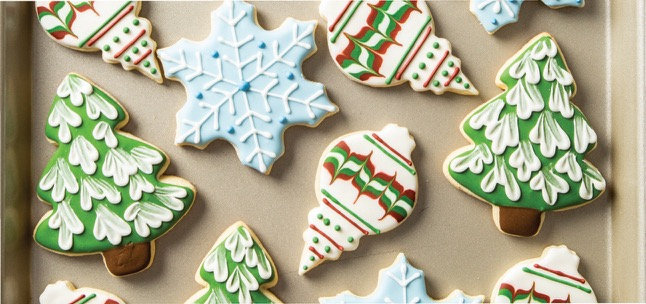

"Recipe 0: Christmas Cookies"

Description
What I call “Christmas Cookies” are simply vanilla biscuits cut out in Christmas shapes and iced with colourful festive frosting. They taste like shortbread cookies, but not quite as buttery or crumbly. They are as classic as vanilla biscuits can be.
This particular biscuit recipe is made for cutting out shapes – in this case, Christmas shapes. Most cookies spread snd puff up so they bear little resemblance to the shape you expected!
But these hold their shape perfectly – as you can see by the sharp ridges and corners in the photo below.
Sourced from https://www.allrecipes.com/recipe/10110/soft-christmas-cookies/
Ingredients
- Butter
- Baking Powder
- Vanilla
- Salt
- Sugar
- Flour
Steps
- Sift flour, baking powder, and salt together, set aside. In a large bowl, cream together the margarine and sugar until light and fluffy. Beat in the eggs one at a time, then stir in the vanilla. Gradually blend in the sifted ingredients until fully absorbed. Cover dough, and chill for 2 hours.
- Preheat oven to 400 degrees F (200 degrees C). Grease cookie sheets. On a clean floured surface, roll out small portions of chilled dough to 1/4 inch thickness. Cut out shapes using cookie cutters.
- Bake 6 to 8 minutes in the preheated oven, or until edges are barely brown. Remove from cookie sheets to cool on wire racks.